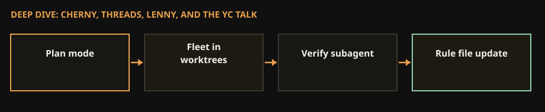
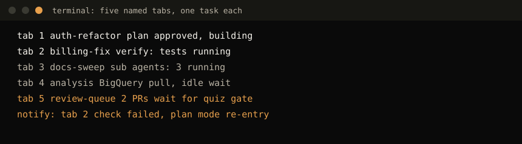

Deep Dive: Cherny, Threads, Lenny, and the YC Talk
Three primary records joined: his January 2026 workflow thread in full, the Lenny episode transcript, and the YC Startup School talk transcript. Sources: X thread transcription on GitHub, podscripts Lenny transcript, TortoiseWolfe YC transcript. Confidence: High for thread 1 and both transcripts, Medium for thread 2 compilations.

Thread 1: the 13 practices, in order
- Run 5 Claudes in parallel in the terminal. Tabs numbered 1 to 5. System notifications on tab events.
- Run 5 to 10 more on the web app. Hand a session from local to web and back. Start sessions from the phone app in the morning.
- Use the top model with thinking for all work. Steering a strong model less beats a cheap model with heavy steering, in total time.
- Keep one shared team CLAUDE.md in git. The whole team edits it many times per week. Each error Claude makes earns a line.
- In review, tag the Claude account on a team mate PR to add the lesson to CLAUDE.md inside that PR, via the GitHub Action. His name for the pattern: compounding engineering.
- Start most sessions in plan mode. Shape the plan until it reads right. Switch to auto accept edits. A good plan one shots the build.
- Slash commands for each daily inner loop job, in git, in .claude/commands/. His commit push PR command runs dozens of times per day. Commands pre compute state with inline shell, such as git status.
- Two named subagents: code-simplifier, which cleans code after a build, and verify-app, which holds long instructions for end to end tests of the product itself.
- A PostToolUse hook formats code after each edit. The hook takes the last 10 percent, so CI format errors near vanish.
- No skip permissions mode. Use a permissions file with safe commands pre allowed, shared with the team in .claude/settings.json.
- Tools by config file: Slack MCP in .mcp.json, shared. BigQuery via the bq CLI. Sentry for logs.
- Long runs, three forms: ask Claude to verify its work with a background agent at the end, or set an agent Stop hook, or use a loop plugin. Sandbox flags stop permission stalls.
- Verification is the top practice, in his own stress. Give Claude a way to verify and quality rises two to three times. His team tests each web change in a real browser via the Chrome extension: open, test the UI, fix, repeat. The check varies by domain: a shell command, a test suite, a browser, a phone simulator.

Thread 2: team tips, from compilations
- Run 3 to 5 git worktrees in parallel. His own form: multiple checkouts with short aliases, plus one analysis worktree for logs and data queries.
- Plan mode with a twist: a second Claude reviews the plan as a staff engineer. On a bad run, return to plan mode and replan, never push through.
- End each correction with the line: Update your CLAUDE.md so you don't make that mistake again. Edit the file with no mercy. One engineer keeps a notes folder per project, updated after each PR, with CLAUDE.md as the pointer.
- A job done more than once a day becomes a skill or a command. One named command runs at session end to find and kill duplicate code. One command pulls seven days of Slack, Drive, tasks, and GitHub into one context dump.
- Bugs: paste the Slack bug thread into Claude with the word fix. Let Claude run the whole repair.
- Setup notes: a fast terminal, colored named tabs, voice dictation at three times typing speed.
Lenny episode: principles and numbers
From the full transcript: 100 percent of his code from Claude since November 2025, 10 to 40 PRs per day across the episode, near 5 agents live as he spoke, and Claude reviews 100 percent of Anthropic PRs with a human after. Team principles in order: better than doing a thing is having Claude do it; underfund projects on purpose, since constraint forces agent first work; speed as a norm, today beats tomorrow; tokens free at the start, cost cuts only after a win scales. His three user tips close the episode: use the most capable model at max effort, since a weak model burns more tokens to the same end; plan mode is one injected sentence that bars code until the plan holds, and near 80 percent of his tasks start there; and try all surfaces, his own split is one third terminal, one third desktop, one third phone.
YC talk: the ablation method and hard tasks
- On each new model, delete first. His team cut 80 percent of the system prompt for Opus 5, since the prompt existed to fix acts the new model no longer shows.
- Method: delete the whole prompt, use the product, add a line back only when the model repeats one error. Each line is re-read each turn, so each line must earn its place.
- User form of the rule: each six months, delete your CLAUDE.md, your skills, and your hooks. Watch the bare model. Add back only what earns a return.
- Give tasks a grade too hard, with guardrails and exit criteria in the prompt, then leave the model to work. His words at 20:15: verification is the single most important thing people get wrong.
- Proof runs: a Bun rewrite from Zig to Rust ran as one prompt plus a dynamic workflow for 11 days. An Electron to Swift rewrite ran 14 to 15 days with a pixel compare check: run both apps, screenshot, compare, repeat until match.
- Dynamic workflows: say use a workflow. Agents fan out, a verify set checks, agents fan out again. His name: an algebra for agents.
- Loops run local on a cron. Routines run in the cloud with the laptop shut. His own product teams run 20 to 30 maintenance routines per day on Anthropic apps: dead code, test gaps, duplicate abstractions, each a one sentence prompt.
Two items that do not exist
The round 3 sweep searched both thread transcriptions for a weekly tips ritual and for capacity planning. Neither item appears. Any guide that lists them under his name cites a source that does not hold them.
Apply this to your work
Your fleet shape is close to his: parallel lanes, shared rule files, review gates. Three upgrades stand out for your work. One: the verify subagent as a named role in each lane, with browser or test proof per change, in place of a text claim. Two: the six month ablation on your own rule files, since your SOUL and AGENTS files grow by accretion and each line taxes each turn. Three: routines for your maintenance load: dead code in study repos, test gaps in labs, duplicate abstractions across your build scripts, each a one sentence cloud routine with a PR as output.
Replication checklist
- Name your verify agent in each active lane. Write its instructions in a file, not in chat.
- Set a date for your first rule file ablation. Back up first. Delete half. Run a week. Add back only earned lines.
- Convert one repeat maintenance job into a routine with a PR output and a gate.
- End each correction you give an agent with the CLAUDE.md line, verbatim habit.
Prompt files: prompts/fleet-day.md and prompts/fleet-review.md.
Visual map of this page
Two views of one page: a Mermaid flow for work order, rendered by the local Mermaid library in this folder, and a markmap for concept groups.
Mermaid source, for offline read
flowchart TD A[Plan mode] --> B[Plan holds] B --> C[Auto accept build] C --> D[Verify: tests, browser] D -->|fail| A D -->|pass| E[Simplify pass] E --> F[Lesson to CLAUDE.md]
How to read the flow diagram. Step 1: start at the first box. Step 2: follow each arrow to the next stage. Step 3: at a branch box, read both paths before a choice. Step 4: a loop arrow means work returns for one more pass vs a test.
Markmap: concepts on this page
- Deep Dive: Cherny, Threads, Lenny, and the YC Talk
- Fleet
- 5 terminal plus 5 to 10 web
- Worktrees za zb zc
- Phone starts
- Files
- Shared CLAUDE.md
- Commands in git
- Permissions shared
- Doctrines
- Verification first
- Ablation each 6 months
- Hard tasks, exit rules
- Fleet